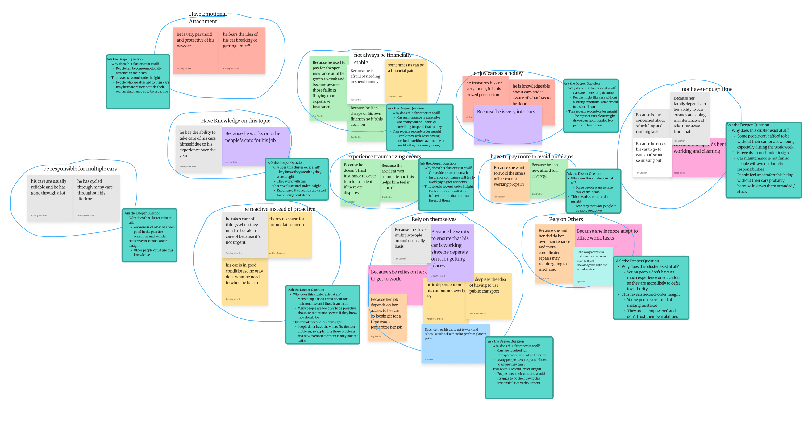
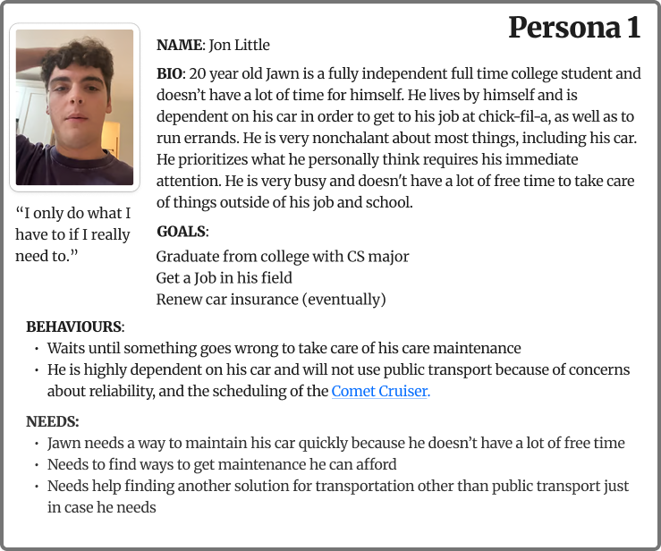
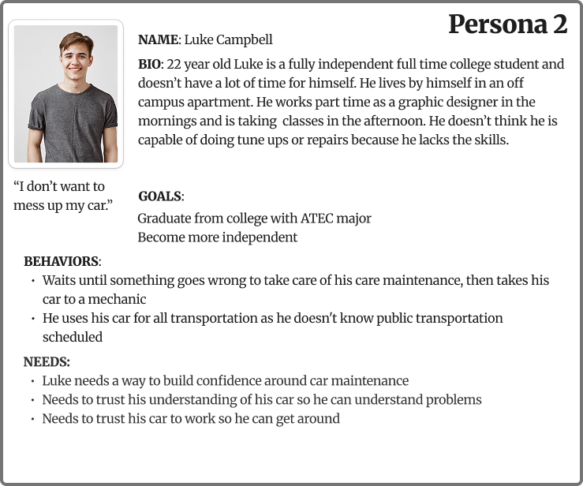
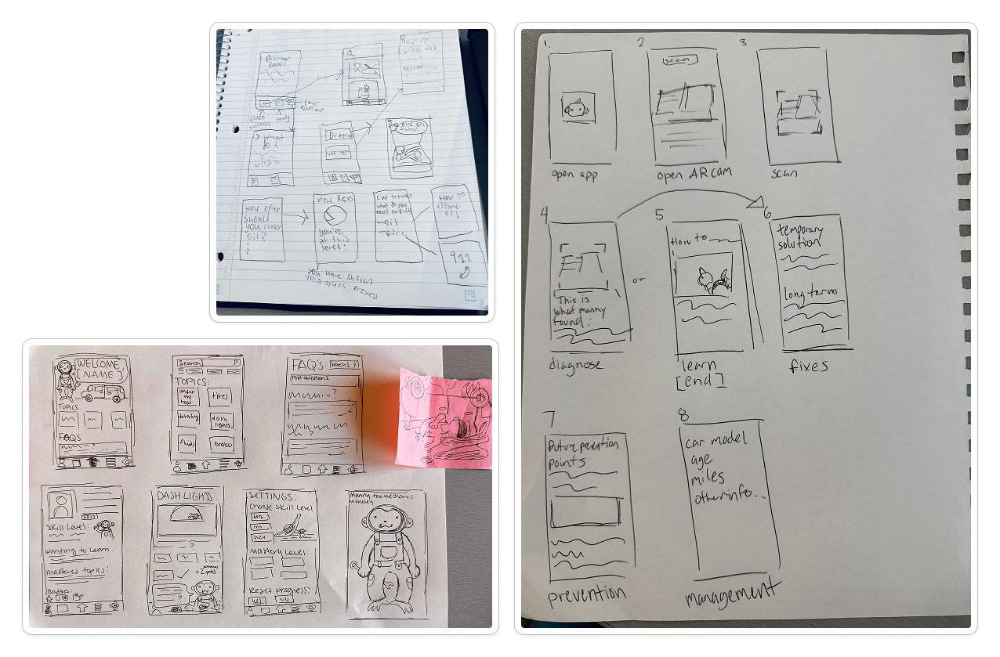

Monkey Mechanic
Background
This project was completed from January to May 2026 by a team of four for
UTD’s UX capstone class. The project was pitched and presented to Capital
One as a way to help young car owners do their own maintenance, especially
targeting those who view themselves as incapable of doing maintenance. Leadership
was rotated based on their role: researcher (my role), synthesiser, designer, and
prototyper.
Research
We started our research process with self-guided secondary research so we could
craft relevant, engaging, and in-depth research questions. We conducted eleven
interviews and found the following attributes present in at least one of our
interviewees:
- Having an emotional attachment to their car
- Being responsible for multiple cars
- Having knowledge on cars
- Lacking financial stability
- Being reactive instead of proactive
- Having experienced car-related traumatic events
- Relying on themselves
- Relying on others
- Paying more to avoid problems
- Enjoying cars as a hobby
- Not having enough time

Analysis of Interviews (interview subjects are given their own color)
We used our interview responses to craft a survey, which guided us forward in this
project. We had 36 respondents to our survey, 26 were aged 25 or under. The majority
of respondents considered themselves very reliant on their cars; only did maintenance
as needed; and went to a third-party mechanic, dealership, or friends or family for
their maintenance. Many respondents wrote that they felt very uncomfortable doing
maintenance themselves and stated they would use an app that provided maintenance
tutorials, car manual information, and guides about their cars in digestible ways.
Synthesis
After our interviews, we created a persona and journey map. Through our first persona,
we concentrated on the idea that many young car owners are busy, may not be available
during normal mechanic’s hours, and likely don’t have the finances to go to a mechanic
or pay for emergency repairs. We envisioned our first persona as being already willing
and capable to do their own maintenance, so we hoped to support them in this process.
From our survey, we found that many young adults are not at all comfortable doing
maintenance themselves. This lead us to create a new persona, also a young adult who
lacks free time and finances, but is not at all willing to do their own maintenance.
Through this process we realized that our focus had to be on making maintenance
accessible to people who don’t know anything about cars, but would benefit from being
able to do their own maintenance.


Design Iterations
We determined that our goal should be making DIY maintenance more approachable to people
who would benefit from the option, but are too intimidated to start. We decided on two
main ways we could do this: a set of guides that would instruct the user precisely on
how to approach different maintenance tasks, and an AR camera that would scan the
user’s engine to help them identify parts of their car and potential problems.

Early Monkey Mechanic paper wireframes
We were instructed to use Figma Make for our designs, so we each prompted designs that
were focused either on the guides or AR camera. We ended up narrowing these early
designs to the following prototypes:
When we presented these ideas to our class, we got positive feedback on the AR camera
because it was unlike any other project in the class, however, we referred to our
research and determined that AR had too narrow a use case to effectively help our user
base.
We used our Figma Make prototypes as inspiration for designs we made ourselves. We
created a mascot, Manny the Monkey Mechanic. Our goal in the design of these prototypes
was to make it clear that this app was for people who didn’t really know where to
start. Manny was meant to hold the user’s hand as they went through the lesions, to
make the information seem less intimidating. We created two new prototypes that we
tested along with our two primary Figma Make prototypes. We tested the four iterations
and noted what was appreciated, where users struggled, and what they wanted.
Final Design
After testing our prototypes, we created a new version, tested that, and made changes
where needed, though at this stage, most of the notes were on bugs in the prototyping
(like buttons not working).
Future Changes
If we had more time for iterations, we would have increased the number of lesions, and
increased the specificity of those lessons. Some of the lesson content was taken from
Figma Makes’ iterations, as no one in our team knew much about cars. If we had more
time, we would add steps on aspects of maintenance that may be considered too obvious
to include, such as how to open the car’s hood. Additionally, we did not have a
functioning AR camera, which would have been useful to add, but we did not have access
to that technology.